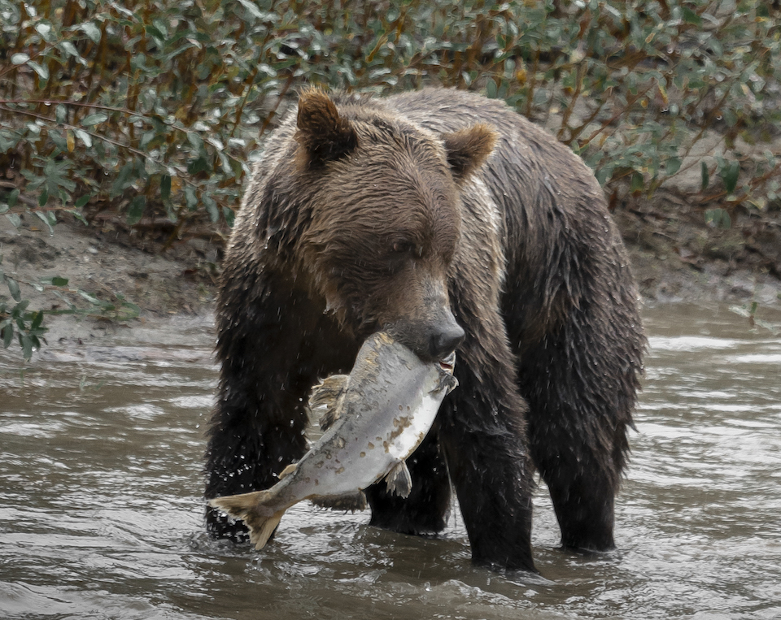
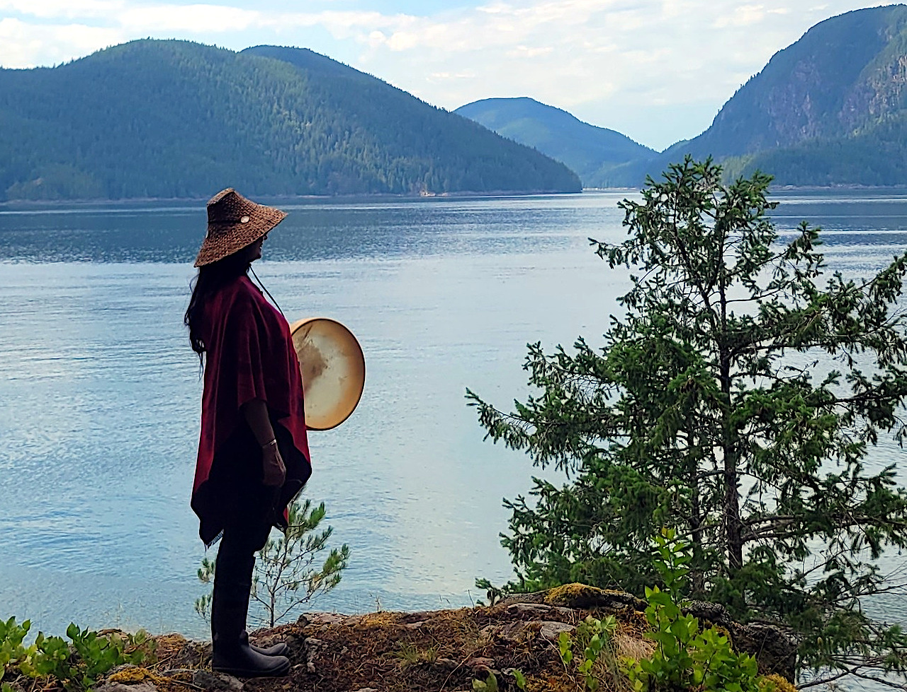
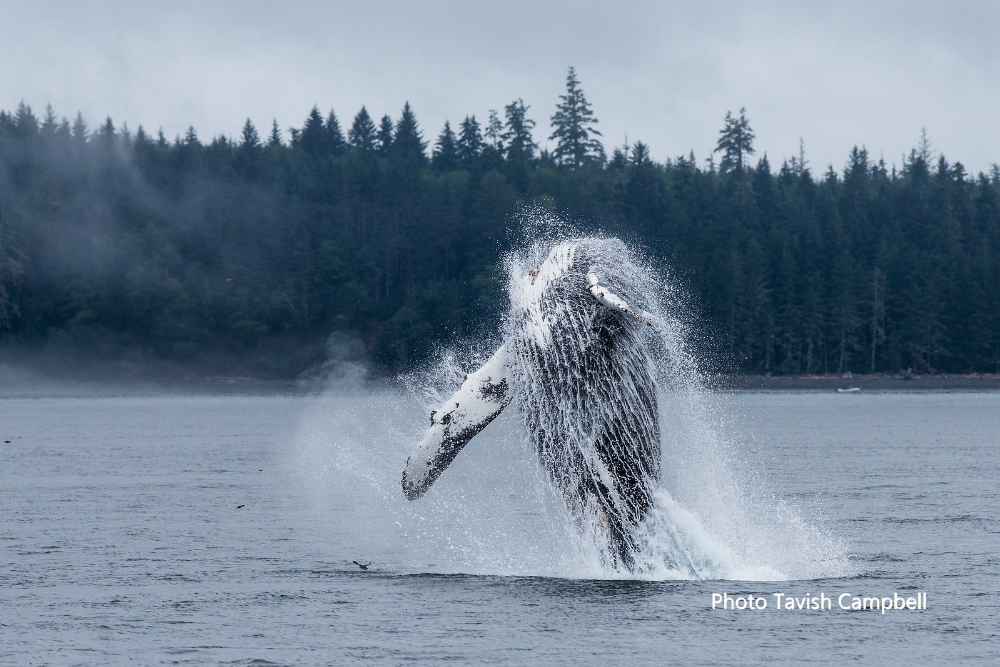
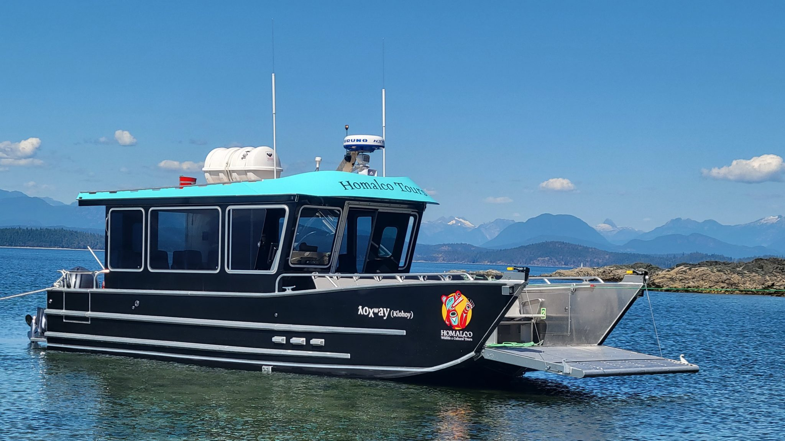

ʔIMOT KʷUNANAME
It is good to see you!
Explore the Salish Sea with us through the Discovery Islands and Bute Inlet - the traditional territory of Homalco First Nation. Experience spectacular wilderness with Indigenous history and North America’s most sought-after wildlife including whales, grizzlies, black bears and eagles.
Homalco Wildlife & Cultural Tours is an Indigenous social enterprise focused on Cultural Revitalization,Conservation & Regeneration, Career Development and Economic Independence. Thank you for choosing us.
WILDLIFE & CULTURAL TOURS
DELUXE GRIZZLIES & CULTURE TOUR
This deluxe experience offers the best of our Great Bears of Bute and People Water Land tours, combining both grizzly bears and First Nation history into a single day, one-of-a-kind, adventure.
LEARN MOREPEOPLE WATER LAND
Experience an authentic cultural and whale watching excursion through the Salish Sea to the historic Homalco First Nation village site of Aupe (Church House). Humpback and killer whales are abundant in the scenic waters along with other iconic marine wildlife. Walk onto the shores of Aupe with a Homalco guide to uncover its rich, complex history.
LEARN MORE THE GREAT BEARS OF BUTE
Witness grizzly bears in their natural habitat on this breathtaking wildlife tour. Join an Indigenous guide and visit the traditional territory of the Homalco First Nation in Bute Inlet. Bear viewing and cultural immersion make for a one-of-a-kind adventure. See also the Deluxe Grizzlies & Culture tour.
LEARN MORESALISH SEA WHALE WATCHING TOUR
Enjoy an unforgettable small group marine adventure to see whales (Qʷ̓ənɛs) with an experience marine wildlife guide. Our modern and comfortable boats ensure that you can safely explore the Salish Sea in search of humpbacks, orcas, dolphins, sea lions, other marine mammals, and a variety of sea birds in their natural habitat.
LEARN MORE SPRING BEARS AND WHALES
Join us on the water to celebrate Spring’s revival! Springtime brings the return of hungry black bears, migrating whales, flocks of seabirds and a magnificent variety of flora and fauna. You never know what you’ll see on this thrilling marine adventure.
LEARN MOREPRIVATE CHARTER TOURS
Book your Private Charter and make it your own West Coast experience. Explore the Discovery Islands through the Salish Sea on our brand-new state-of-the-art covered boats featuring both "Comfort Seating" inside and zodiac-style "Adventure Seating" on the deck. Please contact us for availability.
LEARN MORE XWE’MALHKWU CULTURE
Xwémalhkwu - Homalco First Nation culture is rich with story, rooted in language and inspired by the land, wildlife, and traditional ways of life. We invite you to step into the Indigenous experiences and knowledge sharing led by our Xwémalhkwu guides.
READ OUR STORYCONSERVATION EFFORTS
Through a small conservation fee, included in the price of our tour, we directly contribute to conservation efforts for wild salmon, grizzly bears, and marine mammals. Your support is helping us restore salmon populations in the Orford River and ensuring the sustainable development of marine mammal and grizzly bear tourism in British Columbia and Vancouver Island.
LEARN MOREGETTING HERE
Join one of our tours from Campbell River to head over to the beautiful Bute Inlet. Not sure how to make your way here? Check out our tips on how to get here, where to fly in, and everything you need to get to the launch point of your tour.
GET DIRECTIONSABOUT HOMALCO WILDLIFE & CULTURAL TOURS
Homalco Wildlife & Cultural Tours welcomes visitors to experience a deeper connection with the Indigenous culture of Homalco First Nation. We offer guided wildlife and cultural tours in our traditional territory of the Bute Inlet, with tours departing from Campbell River.
LEARN MORE